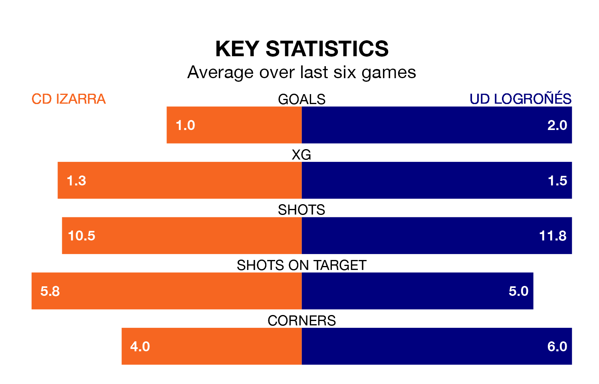

Mid-season relegation candidates CD Izarra face a challenge against high-flying UD Logroñés at the Estadio Merkatondoa on Sunday.
CD Izarra are 15th in the Segunda División RFEF Group 2 table, and have picked up four wins and five draws in their 19 games to date.
Logroñés, meanwhile, are fourth in the standings with 36 points, having won nine and drawn nine, and are 10 points behind table-toppers Athletic Club II.
With 41 goals in 19 games so far this season, Logroñés are the league's highest scorers with 2.2 goals per game. And they are conceding fewer than average, letting in nine goals at a rate of 0.5 per game.
Izarra, meanwhile, are below average scorers, with 0.9 goals per game, compared to a league average of 1.1. They have conceded 1.5 goals per game.
In the last 10 years, Izarra and Logroñés have played each other on eight occasions. Izarra won one of them, Logroñés five, and they drew twice.
On average, Izarra scored 0.9 goals and Logroñés 2.1 in those matches.
Their last meeting was on September 17, when Logroñés won 4-1 at home.
The hosts are in disappointing form in Segunda División RFEF Group 2, with one win and three draws from their last six games.
With three wins and two draws over that period, the away team's form is better – they have taken 11 points from 18, compared to Izarra's six.
Izarra's last match was on January 21, a 1-1 draw against Brea.
Logroñés drew 0-0 with UD Barbastro last time out, also on Sunday.
Updated: 09:07 (UTC), 24/01/24